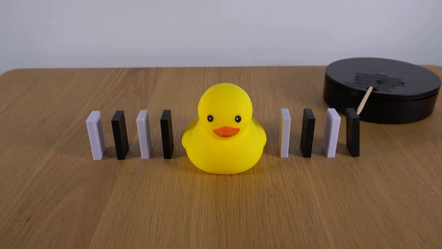
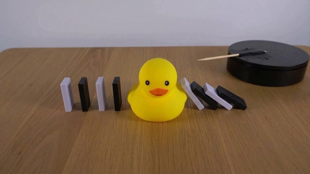
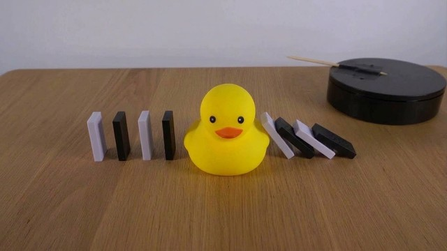

Wan2.2-14B



Video diffusion models are able to generate samples with high-quality appearance and textural qualities. However, it is a well known phenomenon that content produced by these methods exhibits significant physical errors. We propose to resolve these issues by redistributing the task of physical reasoning onto a language model-backed keyframe module. We then condition a video generation model with these keyframes, reducing the role of the diffusion model to the simpler task of interpolating between physically-correct intermediate states, rather than inferring an entire sequence with diffusion. Results demonstrate that our approach significantly outperforms existing approaches, achieving state-of-the-art performance on the Physics-IQ Verified benchmark and PhyGenBench.
Image-to-video: each clip continues from the benchmark’s own starting frame. Open a row to see the keyframes our agent generated and the prompt it expanded.
Text-to-video: the input is the benchmark’s prompt alone, and our agent generates the opening frame as its first keyframe.
* The full code for NEWTON has not been released. These clips come from OpenNEWTON, the version its authors provide, which uses no trained components; we run it with its default GPT-5.5 planner and Seedance 2.0 Fast video generator.